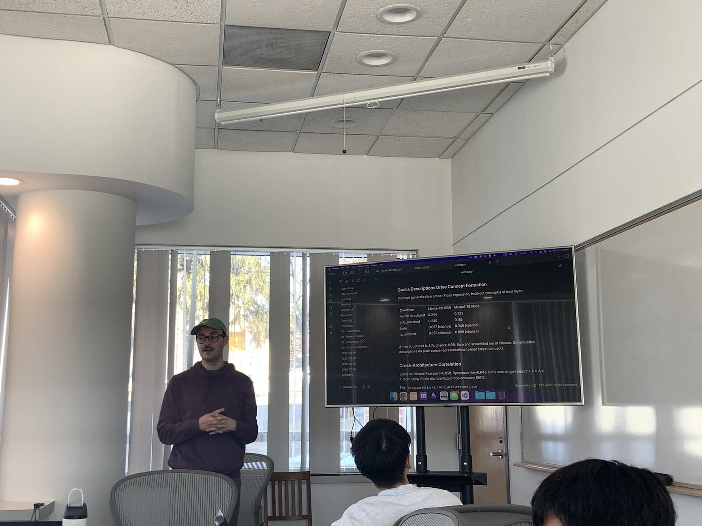
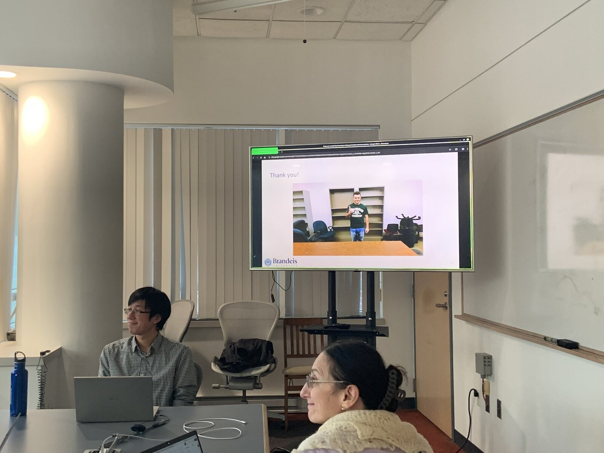
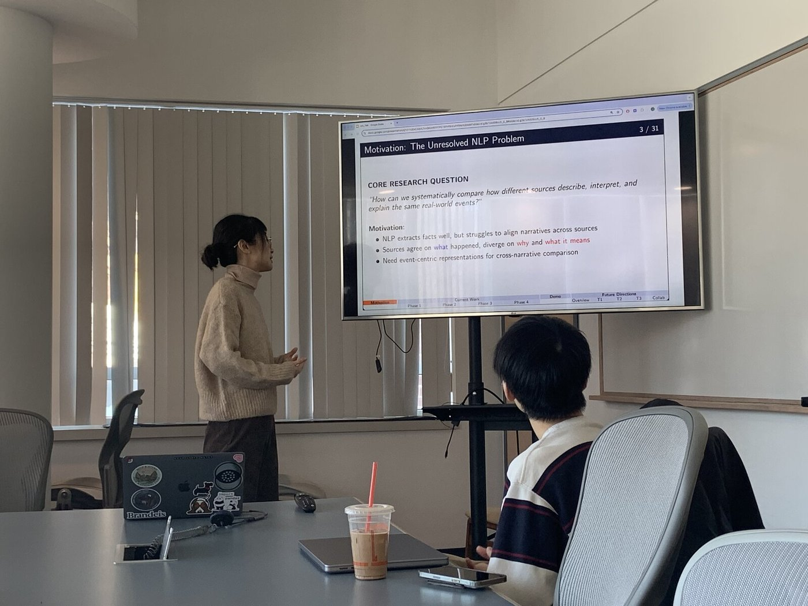
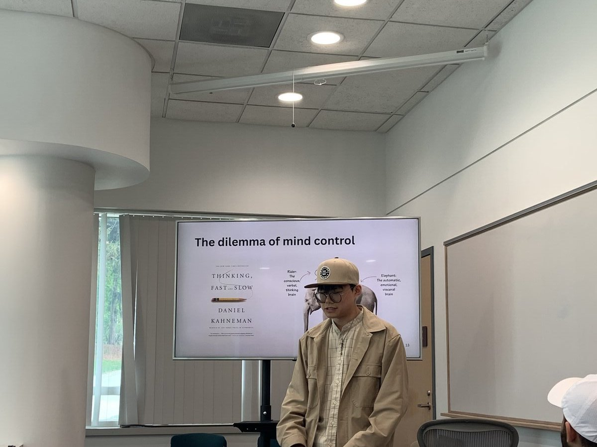

PhooD was a research seminar series for Brandeis PhD students. Graduate students presented in-progress work to peers, occasionally joined by invited external speakers, and shared a meal afterward. It ran for two academic years and twenty-seven events, and continues under a new organizing team.
PhooD gave PhD students a low-stakes venue to present research to their peers. Each event paired a graduate student talk with a shared meal, typically at a nearby restaurant. Presenters ranged from Brandeis PhD students across CS and computational linguistics to invited external speakers — including Brandeis alumnus and Turing Award laureate Leslie Lamport in Spring 2025.
The program ran on a semester cadence — six to eight events per term — across two academic years, funded through the department and coordinated with departmental staff. Its purpose was community as much as content: a reliable point on the calendar for cross-cohort exchange that didn't require a conference deadline to justify the time.
This archive covers PhooD 2.0. The series was founded as PhooD 1.0 under Jack and continues today as PhooD 3.0 under Tim Obiso and Yifan Zhu.
On April 9, 2025, Leslie Lamport — Turing Award laureate and Brandeis PhD alumnus (Mathematics, 1972) — joined PhooD for an extended Q&A over Boston Kebab. We prepared seventeen questions spanning formal methods, mathematical education, systems research, and the practice of thinking and writing about computer science. A few examples from the list:



